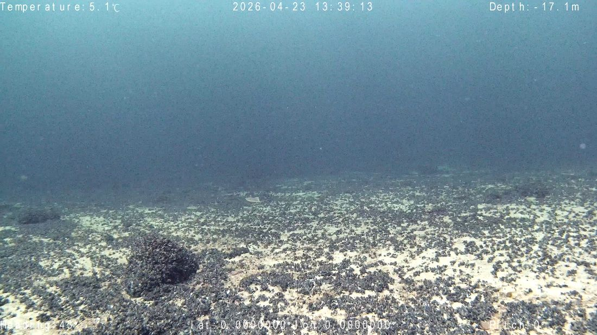
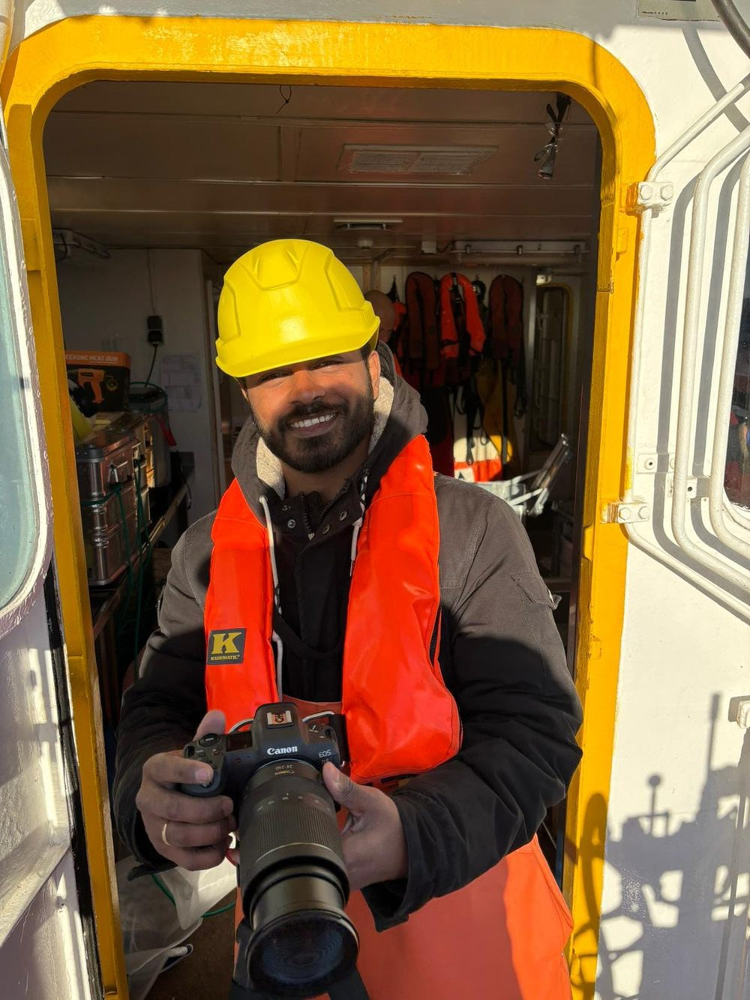

I build vision systems for robots and real-world environments—from LiDAR object understanding and robotic-arm trajectories to underwater detection and field-deployed pipelines.
Applied research and engineering across offices, farms, industrial insect production, and the Baltic Sea.
In progress

University of Rostock · BfN-funded SCHUFI project
Underwater imaging & automated fish detection
Developing detection and data pipelines for non-invasive biodiversity monitoring. Evaluating DINOv3 and detection models on genuine Baltic footage, alongside stereo imaging and research data management.
Multi-view object detection for point-cloud segmentation
Office LiDAR scans projected into three orthogonal views. YOLO detections associated across views using cosine similarity to infer 3D object dimensions.
06TRL 6 demonstrator
Automated cow lameness detection
End-to-end acquisition, annotation, detection, keypoints, tracking, and time-series classification. Demonstrator installed for testing at a working dairy farm; presented at EuroTier 2024.
Robot motion
KUKA 7-DoF trajectories
Quintic-polynomial trajectory planning and prediction using Lua on KUKA’s platform, without access to the controller’s internal implementation.
TRL 7 · Insect monitoring
Explainable larvae quality assessment
Detection, counting, size and colour analysis, and optical-flow movement scoring behind a Good / Medium / Bad assessment interface.
TRL 4 · NouvuTrack
Chicken foot identification
Classical HOG, SIFT, and SVM pipeline for foot identification and classification under limited-data conditions.
TRL 2 · Pig behaviour
Aggressive interaction research
Literature research and technical feasibility assessment for pose estimation, keypoint detection, and attacker–victim identification.
02 / Direction
From perception to physical AI.
What I do now, what I am building next, and where I want my engineering work to go.
Now
Robust real-world perception
DINOv3, object detection, instance segmentation, stereo imaging, underwater vision, and reproducible ML data pipelines.
Next
Spatial intelligence
SLAM, LiDAR-camera fusion, 3D reconstruction, Gaussian splatting, semantic mapping, and robot navigation.
North star
Machines that understand & act
Physical AI for land robots, drones, and ROVs—integrating perception, world understanding, motion, and deployment.
03 / Engineering lab
Future work, honestly labeled.
Planned repositories have a clear question and a visible status. They are directions for new work, not claims of completed experience.
Localization, mapping, and evaluation on real-world image sequences.
Planned repository
Stereo to spatial maps
Depth, 3D reconstruction, and Gaussian-splatting experiments.
Planned repository
World understanding for robots
Semantic representations connecting vision, maps, and navigation.
Repository links will be added as each planned experiment begins.
04 / About
Hardware roots. Vision specialization.

Fieldwork / SCHUFI / University of Rostock
I like problems where software meets the physical world.
My path started in mechanical engineering and CAD/CAM, moved through robotic proof-of-concepts and KUKA trajectory work, and then specialized in computer vision.
At Fraunhofer, I built vision pipelines for agriculture, livestock, insect production, and LiDAR object understanding. At the University of Rostock, I now work on underwater imaging and automated fish detection. My next step is integrating these experiences into robot perception and spatial intelligence.
Python
PyTorch
OpenCV
OpenMMLab
YOLO
MLflow
LiDAR
Lua
English C1 · German B1 · Hindi fluent · Telugu native
05 / Contact · Rostock, Germany
Let’s build machines that understand the real world.